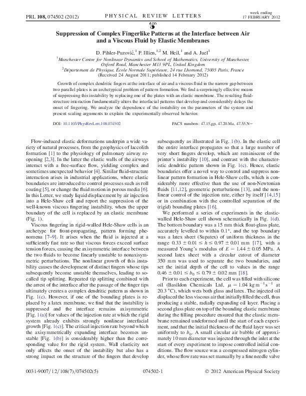

|

|
PihlerPuzovicEtAl2012
|
Notes:
- Real classic by some superb authors :)
- Replacing the upper boundary of a Hele-Shaw cell by an elastic
membrane can modify/weaken and ultimately suppress the classical
fingering instability.
- Given the circular geometry everything evolves all the time;
fingers keep splitting.
- Careful experiments and data analysis, plus a scaling argument
for how the flow rate required for the onset of the instability
depends on the other system parameters. [Not everybody believes
the latter, but it's been followed by JFM where the analysis is done
properly.]
|